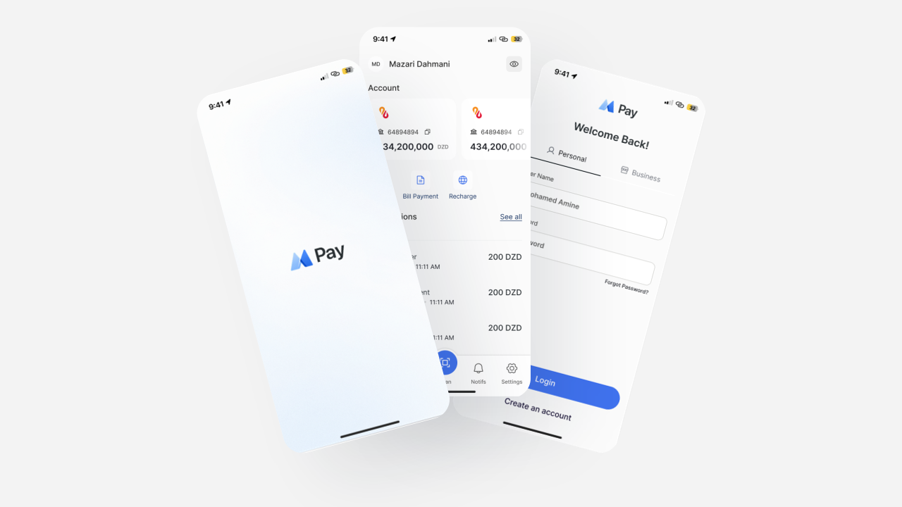
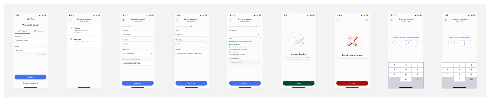
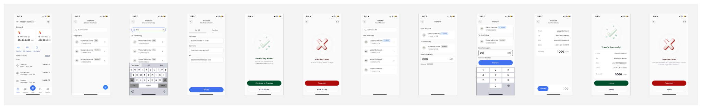

MPay
A digital banking app built for Algeria — onboarding, identity verification, transfers, and QR payments in one connected product. Designed end-to-end for Banque Al Baraka Algeria, from first download to daily use.


Ask for the choice that matters first.
Most banking onboarding fails for the same reason: it asks for everything before proving anything's worth the wait. MPay's flow front-loads the one choice everything downstream depends on — personal or business account.
Address and personal information are split into separate steps, not because the form needs it, but because one long form reads as effort with no reward. Each screen closes a small, visible loop before opening the next.
Password and PIN are treated as two different security layers, not two versions of the same step — PIN for daily unlock, password for account recovery. Conflating them was the fastest way to make both feel arbitrary.

The moment with the least feedback gets the most attention.
People didn't distrust the bank — they distrusted the moment of sending money. That shaped the whole flow: fewer steps between deciding to send and confirming it's done, and constant feedback at the one step that has none by default.
Beneficiary search doubles as beneficiary management — searching, adding, and reusing a contact are the same interaction, not three screens pretending to be one. PIN confirmation sits directly before the send, not behind a review screen nobody reads twice.
Failure states got equal design attention to success states. A transfer that doesn't go through is the moment trust is actually tested, not a rare edge case patched in later.

Short for the customer, thorough for compliance — at once.
Identity verification is the one flow customers want short and compliance requires thorough. Those two pressures don't resolve themselves.
The verification checklist is its own screen, before the camera opens, so customers know exactly how many steps remain and why each is required — a compliance step explained is a compliance step that doesn't feel arbitrary.
Front and back document capture are separate screens rather than one multi-angle capture, so a failed scan on one side doesn't force redoing both. Review comes before submission, with an explicit hold to catch mistakes before they become support tickets.

A request that doesn't need a beneficiary.
P2P Transfer assumes you know who you're paying — a saved contact, a RIB. Create QR Code exists for the opposite case: someone who isn't in your contacts yet, doesn't share your bank, or is standing right in front of you with no time to type an account number.
A generated code can carry a fixed amount or stay open, depending on the moment — a fixed amount for a specific debt someone owes you, an open one for a stall or small vendor who won't know the total until checkout.
The scan-and-confirm screens deliberately reuse the same visual language as every other confirmation in the app. For the person paying, recognizing MPay matters more than understanding what generated the request in the first place — and generating the code itself stays to the fewest taps possible, since the whole point is that someone's waiting.

Business accounts needed admin tools, not just banking tools.
MPay isn't only a consumer banking app. Business accounts needed a secure way to manage employees without relying on the bank's back office. Business owners can create employee accounts, assign each employee to a specific store or branch, and manage access from one place.
Employee creation separates personal information from work information because they change independently. Store assignment and employee roles belong to the business structure, not the employee's identity.
This flow allows businesses to scale operations while keeping permissions organized across multiple stores, making day-to-day staff management simple and secure.

Consistency across six flows was the real project.
The hardest part of MPay wasn't designing individual screens—it was making six different experiences feel like one product. From onboarding and identity verification to money transfers, QR payments, and business administration, every flow needed to share the same interaction language while serving very different user goals. Maintaining that consistency across the entire app was the real design challenge.
The Business Account experience introduced a second audience alongside everyday banking customers. Beyond payments, business owners needed practical tools to manage stores, create employee accounts, assign staff to branches, and organize permissions. Designing those administrative workflows while preserving the same visual language and usability as the consumer experience became an important part of the project.
What's shown here is a curated selection, not the complete app. These six flows highlight the core product experience, while many additional journeys, edge cases, business features, and the complete design system are intentionally left out to keep this case study focused and concise.